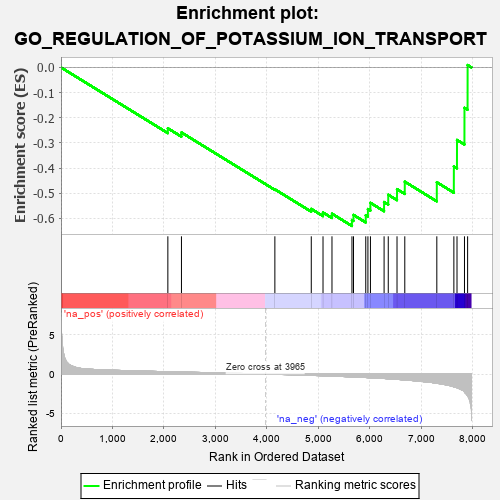
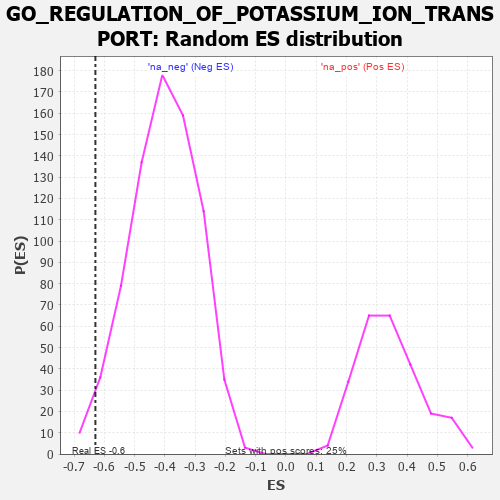

| | | Dataset | 7d |
| Phenotype | NoPhenotypeAvailable |
| Upregulated in class | na_neg |
| GeneSet | GO_REGULATION_OF_POTASSIUM_ION_TRANSPORT |
| Enrichment Score (ES) | -0.62972456 |
| Normalized Enrichment Score (NES) | -1.5605111 |
| Nominal p-value | 0.023968043 |
| FDR q-value | 0.12581751 |
| FWER p-Value | 1.0 |
Table: GSEA Results Summary

Fig 1: Enrichment plot: GO_REGULATION_OF_POTASSIUM_ION_TRANSPORT
Profile of the Running ES Score & Positions of GeneSet Members on the Rank Ordered List
| PROBE | GENE SYMBOL | GENE_TITLE | RANK IN GENE LIST | RANK METRIC SCORE | RUNNING ES | CORE ENRICHMENT | | 1 | KCNC2 | | | 2075 | 0.295 | -0.2418 | No |
| 2 | ANO6 | | | 2339 | 0.255 | -0.2584 | No |
| 3 | WNK3 | | | 4153 | -0.034 | -0.4842 | No |
| 4 | DLG1 | | | 4860 | -0.169 | -0.5620 | No |
| 5 | DRD2 | | | 5088 | -0.221 | -0.5762 | No |
| 6 | PTEN | | | 5262 | -0.261 | -0.5811 | No |
| 7 | WNK1 | | | 5650 | -0.362 | -0.6063 | Yes |
| 8 | CD63 | | | 5680 | -0.370 | -0.5859 | Yes |
| 9 | KCNQ1 | | | 5918 | -0.441 | -0.5872 | Yes |
| 10 | ACTN2 | | | 5960 | -0.458 | -0.5626 | Yes |
| 11 | NETO2 | | | 6009 | -0.475 | -0.5379 | Yes |
| 12 | STK39 | | | 6274 | -0.563 | -0.5347 | Yes |
| 13 | GALR2 | | | 6355 | -0.599 | -0.5059 | Yes |
| 14 | VAMP2 | | | 6525 | -0.672 | -0.4836 | Yes |
| 15 | DPP6 | | | 6676 | -0.751 | -0.4539 | Yes |
| 16 | ANK2 | | | 7298 | -1.170 | -0.4561 | Yes |
| 17 | KCNN2 | | | 7629 | -1.611 | -0.3933 | Yes |
| 18 | ANK3 | | | 7690 | -1.740 | -0.2881 | Yes |
| 19 | KCNC1 | | | 7835 | -2.249 | -0.1605 | Yes |
| 20 | CAV3 | | | 7896 | -2.739 | 0.0094 | Yes |
Table: GSEA details [plain text format]

Fig 2: GO_REGULATION_OF_POTASSIUM_ION_TRANSPORT: Random ES distribution
Gene set null distribution of ES for GO_REGULATION_OF_POTASSIUM_ION_TRANSPORT